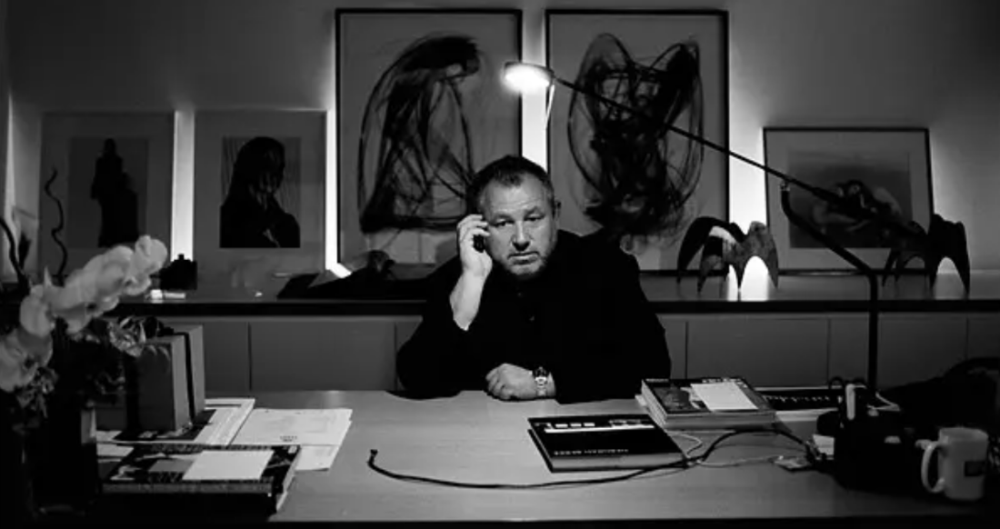

"I don't want to post my video in square or vertical shape.
I want to post it in horizontal shape!"
I want to post it in horizontal shape!"
"제 영상을 정사각형이나 세로로 긴 형태로 올리고 싶지 않아요.
가로로 긴 형태로 올리고 싶다구요!"
"Emotional things last a long time.
Fashion is about to change, and trends are about to go.
But things that have true feelings and things
that have real meaning for people don't change.
That's what I'm interested in."
Fashion is about to change, and trends are about to go.
But things that have true feelings and things
that have real meaning for people don't change.
That's what I'm interested in."
감정이 담긴 것들은 그 가치가 오래도록 지속되죠.
패션은 계속 변화하고, 유행은 흘러가기 마련이죠.
하지만 진실된 감정을 담아 만든 것들과 사람들에게
진정한 의미가 있는 것들은 변치 않아요.
제가 관심을 두고 있는 부분은 바로 이런 것들이에요.
패션은 계속 변화하고, 유행은 흘러가기 마련이죠.
하지만 진실된 감정을 담아 만든 것들과 사람들에게
진정한 의미가 있는 것들은 변치 않아요.
제가 관심을 두고 있는 부분은 바로 이런 것들이에요.
"I like things that are extremely pure and simple so
that I can easily understand when it's captured in a page, photo, or video."
that I can easily understand when it's captured in a page, photo, or video."
‘나는 극도로 순수하고 심플하여 지면이나 사진,
영상에 담겼을 때 쉽게 이해할 수 있는 것을 좋아한다’
영상에 담겼을 때 쉽게 이해할 수 있는 것을 좋아한다’